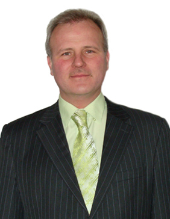

Джура Сергей Георгиевич

Кандидат технических наук, доцент, зав. отделом внешних связей.
- Член-корреспондент Международной Академии Наук Экологии и Безопасности СПб. (Донецкое отделение);
- Ph.D., доцент кафедры ЭПГ Донецкого Национального Технического Университета (ДонНТУ);
- заместитель директора Института международного сотрудничества;
- член международного редакционного совета журнала “Человек в социальном мире” (Россия);
- член международного редакционного совета журнала “Дельфис” (Россия);
- член промышленно-финансового комитета журнала “Вестник водородной экономики и экологии” (Украина);
- член Международного Научного Совета Ассоциации исследователей Психической Энергии;
- член Международного Союза Машиностроителей.
Читаемые курсы:
- Математические методы и модели (на русском и английском языках);
- Математические задачи электроэнергетики;
- Вопросы компьютерного проектирования электроснабжения зданий и бытовых потребителей;
- Вычислительная техника и алгоритмические языки.
Основные научные интересы:
- Этика, Культура и Наука Будущего;
- водородная цивилизация и нетрадиционная энергетика, философия техники и рискология;
- экология и гармонизация информационных пространств, и др.
Список избранных трудов
- Navka I., Dzhura S. System approach to the optimization problems / Proceedings of International Conference “Modern Technologies in Machine Manufacturing TMCM” (May 23–25, 2002). Bulletin of the Polytechnic Institute of Iassy, Tomul XLVIII (LII), Supliment II. - Iassy, 2002. - 292–295 p.
- Andrey A. Sholomitskij, Sergey G. Dzhura. The real World Virtual Models // ICAIS 2002. 2002 IEEE International Conference on Artifical Intellegence Systems. — The USA: Journal “Computer Society”, 2002. - p. 260–264.
- Cherkashin I.Ju., Chursinov V.I., Dzhura C.G. Wirtualne modelowanie w zagadnieniach elektroenergetiki dla zakladow gorniczych Donbasu / Telekomunikacja I Systemy Bespieczenstwa w Gornictwe. KTG’2002. XXX Konferencja Sekcja Cybernetyki w Gornictwie KG PAN. V konferencja Telekomunikacja w Gornictwie. Polska Akademia Nauk. Seria: Sympozja I konferencje. — Gliwice: Politechniki Slaskiej, 2002. — p. 263–270.
- Sholomitski A. A., Anoprienko A. Y., Dzhura S. G. Object Models In The Opencast Mining Computer-Aided Design Interactive Systems: The Problems of Human - Computer Interaction. Proceedings of the International Conference, 23–27 september 2003. Ulyanovsk: UlSTU, 2003. p. 41–48.
- Chursinov V.I., Dzhura C.G. Perspektywy techniki neuronoweydla prezemistlu elektrotechnicnego / Telekomunikacja I Systemy Bespieczenstwa w Gornictwe. KTG’2003. XXX Konferencja Sekcja Cybernetyki w Gornictwie KG PAN. VI konferencja Telekomunikacja w Gornictwie. Polska Akademia Nauk. Seria: Sympozja I konferencje. — Gliwice: Politechniki Slaskiej, 2003. — p. 301–306.